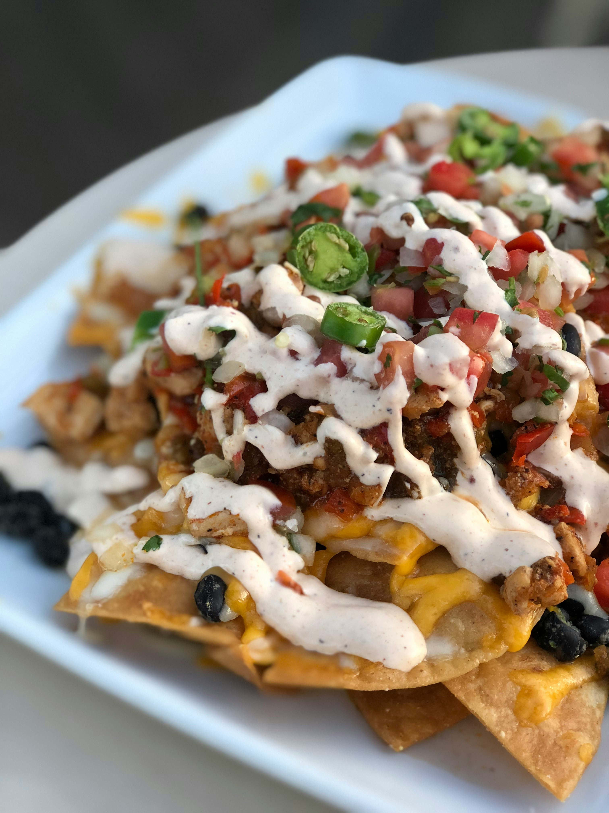

Super Nachos Recipe

These homemade nachos are great for game day. This recipe makes a huge meal-sized tray of nachos loaded with taco-seasoned ground beef, refried beans, salsa, jalapeños, and cheese.
Prep time should be around 45 minutes and give you 12 servings.
How to Make Nachos
You'll find a detailed ingredient list and step-by-step instructions in the recipe below, but let's go over the basics:
What Goes On Nachos?
These nachos are topped with seasoned ground beef, shredded Cheddar cheese, canned refried beans, chopped tomatoes, canned black olives, salsa, sour cream, green onions, and sliced jalapeño peppers.
Other delicious options include shredded chicken, barbacoa, guacamole, cotija cheese, corn, pico de gallo, shredded lettuce, diced onions, pickled red onions, and/or black beans.
How to Make Nachos in the Oven?
Here's a brief overview of what you can expect when you make homemade nachos:
- Cook and season the ground beef on the stove.
- Spread the tortilla chips on a baking sheet.
- Top the chips with cheese, beans, and beef.
- Broil until the cheese is melted.
- Top with olives, salsa, sour cream, green onions, and jalapeños.
How to Store Left Over Nachos
Nachos don't make the best leftovers, as the tortilla chips will get soggy quickly. If you do have leftover assembled nachos, though, you can store them in an airtight container in the fridge for up to three days.
Tip
If you want to cut down on prep time, you can prepare the beef a day or two in advance and store it in an airtight container in the refrigerator.
How to reheat Nachos
Reheat nachos in the oven (not the microwave) for the best results. Spread them in a single layer on a prepared baking sheet, then bake at 350 degrees F until the nachos are thoroughly hot. Adding a sprinkle of shredded cheese before reheating can help the nachos taste fresher.
Ingredients
- Aluminum Foil.
- 1 pound ground beef
- 3/4 cup water
- 1 ounce taco seasoning mix
- 18 ounce restaurant-style tortilla chips
- 1 cup shredded sharp Cheddar cheese, or more to taste
- 15 ounce refried beans
- 10 ounce pitted black olives, drained and chopped
- 1 cup salsa
- 1 cup sour cream, or more to taste
- 4 green onions, diced
- 4 ounce sliced jalapeño peppers, drained
Directions
- Step 1. Preheat the oven broiler. Set the oven rack about 6 inches from the heat source. Line a baking sheet with aluminum foil.
- Step 2. Gather all ingredients.
- Step 3. Cook and stir ground beef in a skillet over medium heat until meat is crumbly and no longer pink, 5 to 10 minutes. Drain excess grease. Stir in water and taco seasoning mix; simmer until beef mixture has thickened, 8 to 10 minutes.Cook and stir ground beef in a skillet over medium heat until meat is crumbly and no longer pink, 5 to 10 minutes. Drain excess grease. Stir in water and taco seasoning mix; simmer until beef mixture has thickened, 8 to 10 minutes.
- Step 4. Spread tortilla chips on the prepared baking sheet. Top with Cheddar cheese, then dot with refried beans and ground beef mixture.
- Step 5. Broil in the preheated oven until cheese is melted, 3 to 5 minutes. Top nachos with olives, salsa, sour cream, green onions, and jalapeño peppers.
Nutrition Facts per serving
432 Calories, 25g Fat, 40g Carbs, 15g Protein.